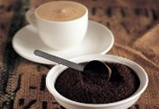
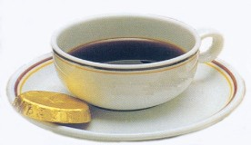
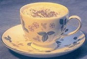

Copright©2008-2010 All Rights Reserved by aishangkafei
地址：河南省东源市沁安区一环东路爱尚咖啡 大厦 电话 0391-65212868 备案号：豫ICP备08012345
| 咖啡物语 | 其实，咖啡的口味亦如每个人的性格，可爱甜美派或许喜欢卡布季诺的绵密口感与有趣图纹，而自然派则更喜欢童铁随意的风情。快来看看，哪 款咖啡才是你的心头所好 | ||
| 爱尚文化 |  | ||
| 咖啡种类 |
|||
| 咖啡DIY |
|||
| 理性派：意大利浓缩咖啡 | 可爱派：卡布奇诺咖啡 | 自然派：拿铁咖啡 | |
| 您的建议 | |
 |  |
| 联系我们 | |||
|
|||
| 甜美派：摩卡咖啡 | 唯美派：康宝蓝咖啡 | 贵族派：皇家咖啡 | |
Copright©2008-2010 All Rights Reserved by aishangkafei 地址：河南省东源市沁安区一环东路爱尚咖啡 大厦 电话 0391-65212868 备案号：豫ICP备08012345 |
|||